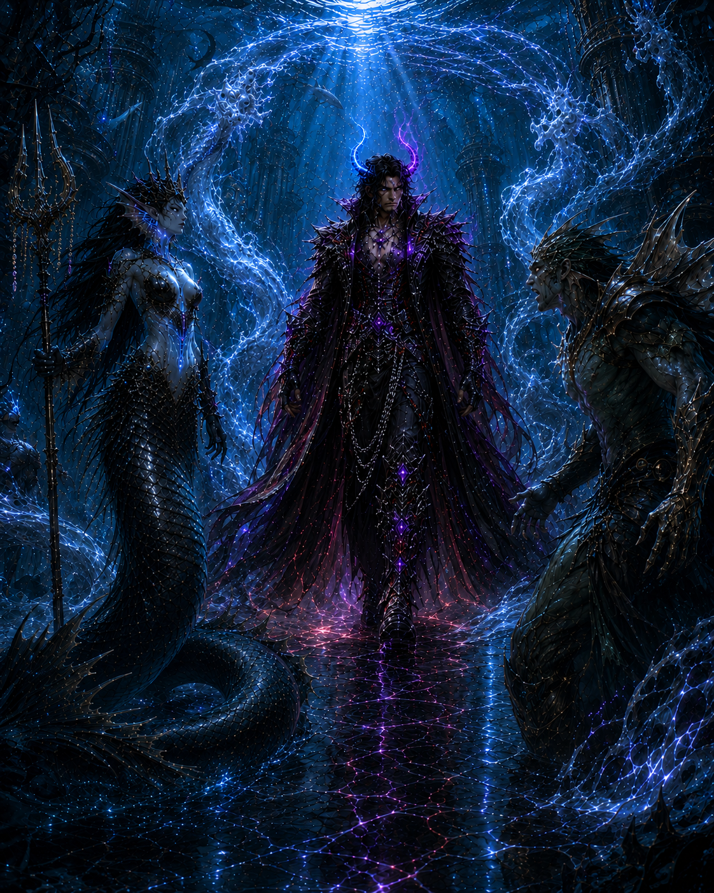
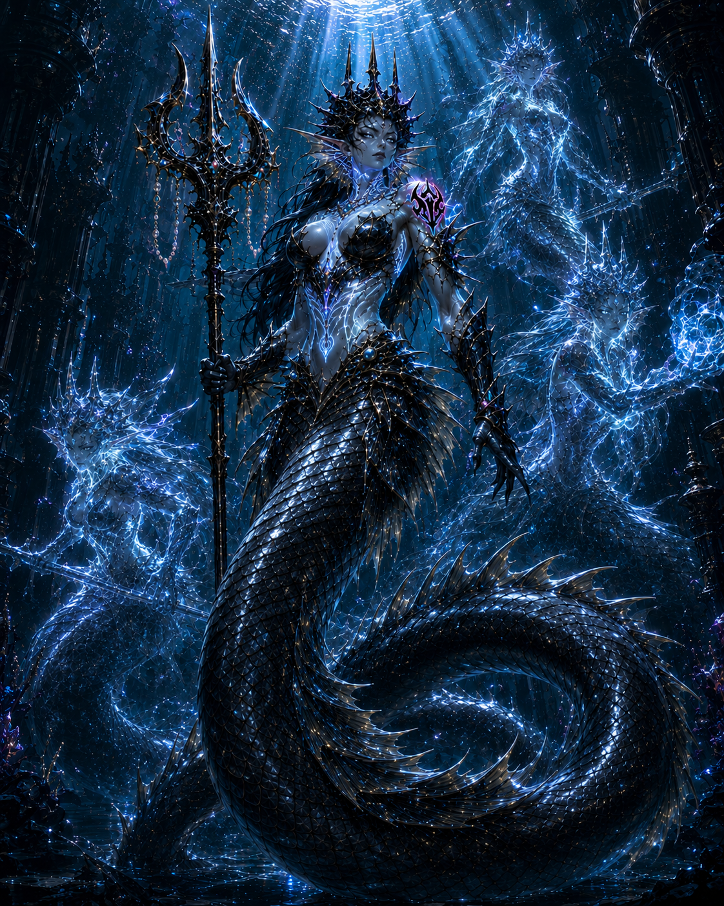
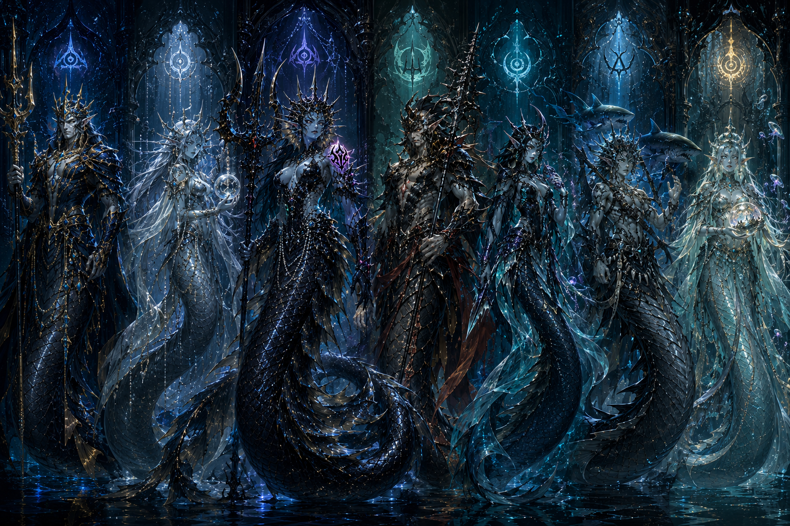
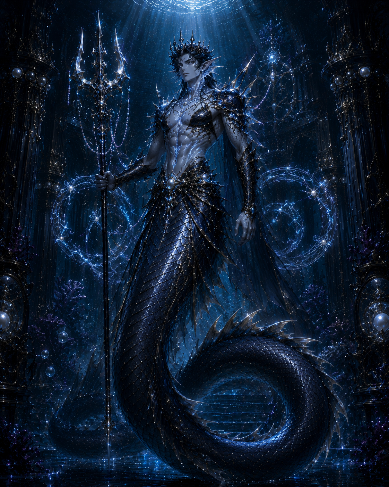
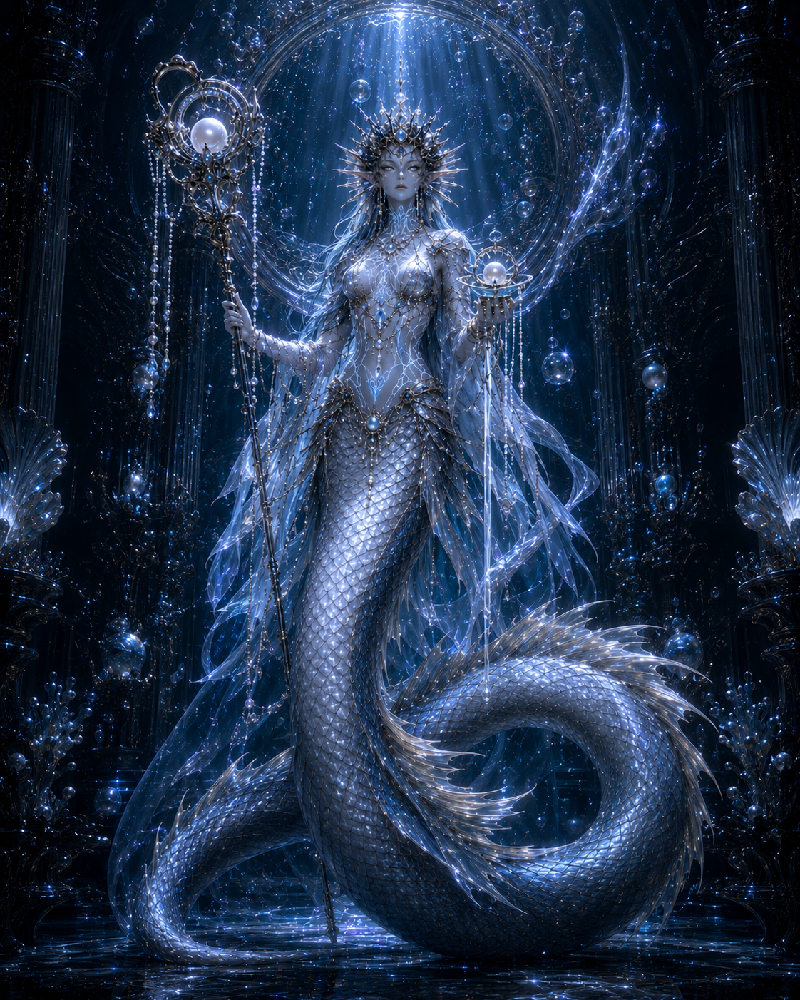
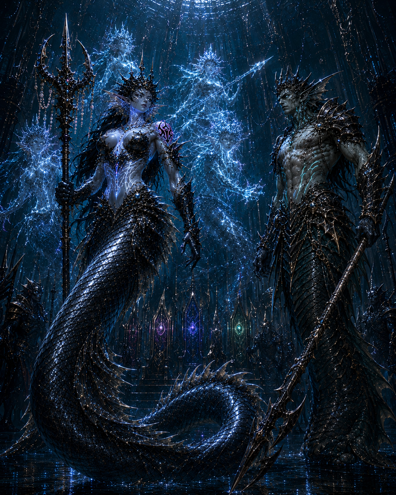
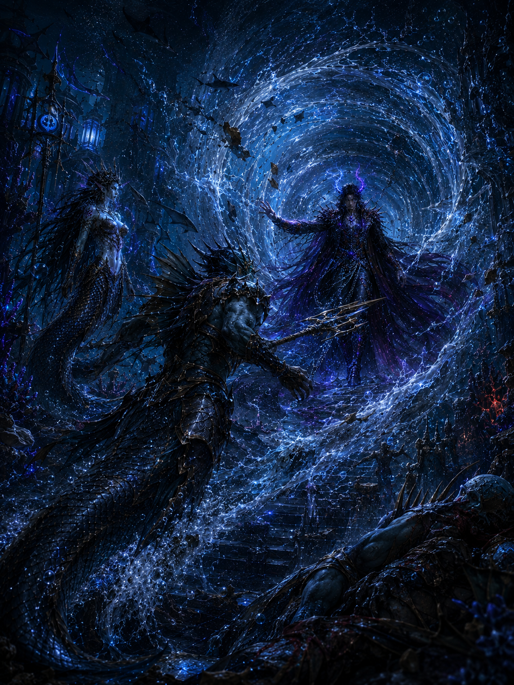
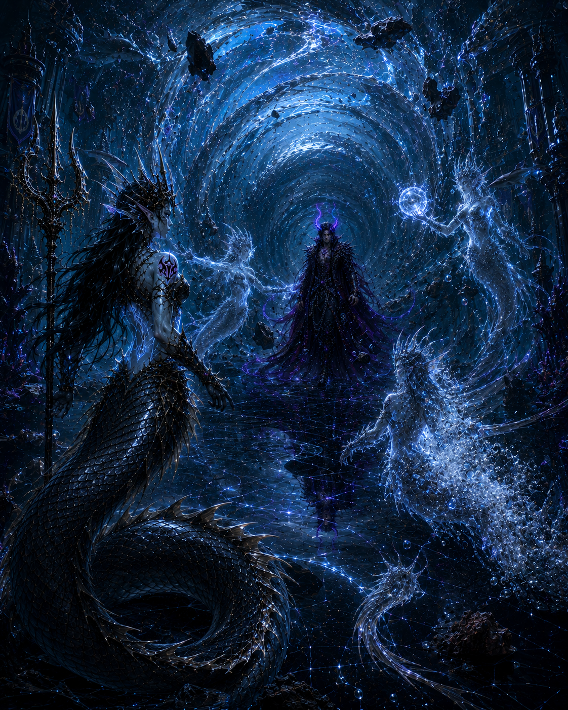
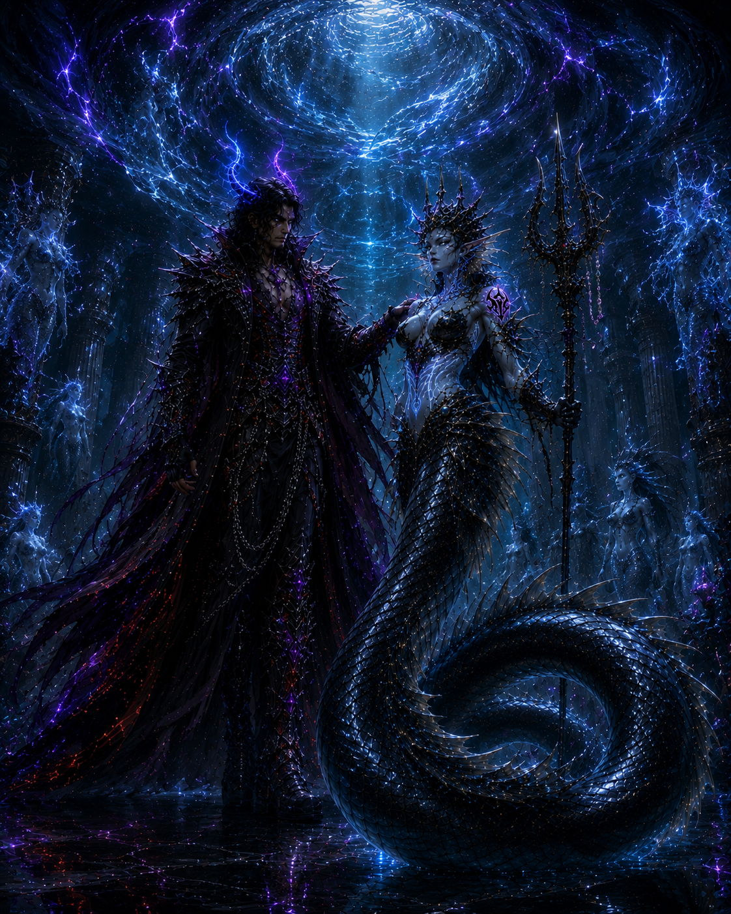
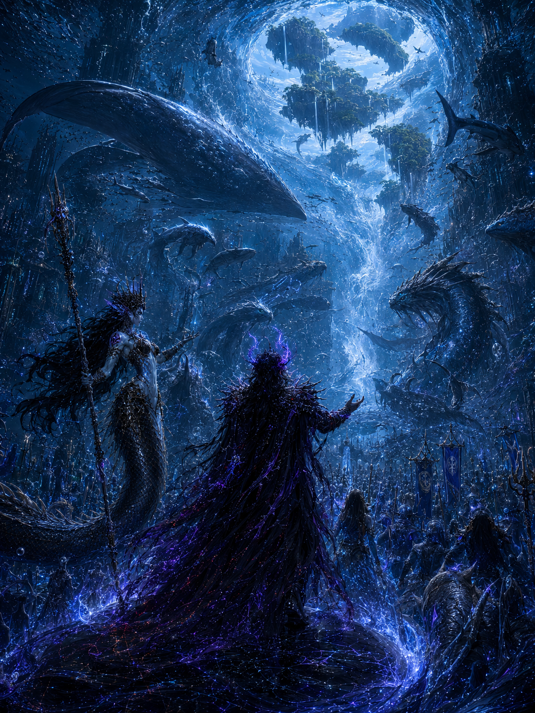

Tide-Heirs under pressure
The sequence places Kaelithra beside Thaloryn Vesh, Maerith Vesh, Voryss, and the Seven Tide-Heirs. The arc stays within bloodline tension, court weight, and route access.
The Merfolk Bridge Arc opens beneath the surface routes of Vhalassar, where bloodline heirs, priestess authority, and deep-sea military power converge around the question of passage.
View Full Gallery

Kaelithra Vesh stands as the central pressure point: not yet Apostle, but marked by potential, tested by family conflict, illusion failure, and the arrival of Rhagnvyr's gravity.
The arc does not begin as conquest alone. It begins as access.
Through the Vhalassar corridor, Rhagnvyr's influence pushes toward the Skywell route, forcing the Tide-Heirs to measure bloodright against pressure they cannot command.
Kaelithra's recognition as Harbinger signals the first opening of the bridge.
The sequence places Kaelithra beside Thaloryn Vesh, Maerith Vesh, Voryss, and the Seven Tide-Heirs. The arc stays within bloodline tension, court weight, and route access.
Kaelithra's mirage test fails after sibling conflict and Rhagnvyr's entry. The failure is a proving beat, not an unsupported transformation claim.
Kaelithra is Harbinger-recognized according to the supplied sequence. This page does not claim Apostle status or final conquest outcomes.
The Merfolk page follows the supplied README sequence from 01 to 10.
Kaelithra is introduced as the central candidate figure.
The wider bloodline field enters the arc.
Thaloryn anchors the crown prince side of Vhalassar authority.
Maerith anchors the priestess-princess side of Vhalassar authority.
The bloodline conflict becomes direct.
Rhagnvyr's arrival turns route politics into RedShift contact.
The sequence confirms Voryss is defeated by Rhagnvyr.
Kaelithra's illusion fails under the new pressure line.
Recognition opens the bridge without making Kaelithra an Apostle.
The arc turns toward route access through the sea-beast assembly and Skywell path.
Ten selected original PNGs preserved in exact README order.
Harbinger Candidate Solo.

Vhalassar Lineup.

Crown Prince Solo.

Priestess Princess Solo.

Kaelithra vs Voryss.
Rhagnvyr Enters Vhalassar.

Defeated by Rhagnvyr.

Kaelithra tested.

Recognition scene.

Sea-Beast Assembly.